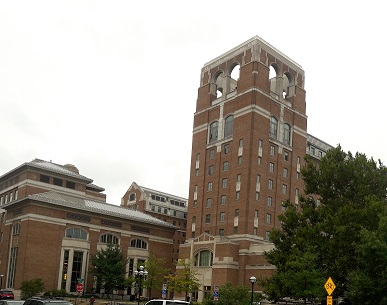

I am a student specializing in Archives and Records Management and Digital Curation at the University of Michigan School of Information. My undergraduate degree is in History and as an aspiring archivist, I am passionate about digitizing archival collections and using technology to make libraries’ and archives’ resources more accessible to patrons and researchers.
Digital Curation provides the opportunity to combine both traditional archival concepts and principles, such as provenance, with technology, such as in the digital humanities. Digitization also allows the materials that are contained in libraries and archives to be made more widely accessible to researchers and patrons, without the limitations and constraints of having to visit a particular location. However, once materials have been digitized they, like born digital material, would also require continued care and maintenance. Through a combination of coursework, ranging from archival theory to constructing databases and programming, and practical experience and internships, at institutions such as the Ann Arbor District Library and the Gerald R. Ford Presidential Library, the UMSI program is allowing me to gain the knowledge and skills to pursue my interests in preservation and accessibility.
